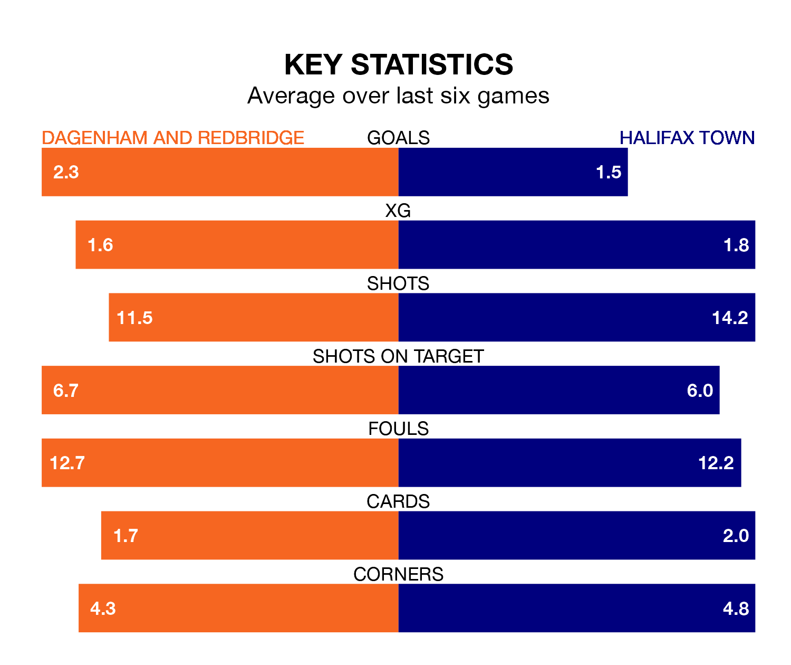

Halifax Town visit Dagenham and Redbridge at the Chigwell Construction Stadium on Saturday on the back of three consecutive wins in the National League.
Halifax have picked up nine points from their last six games, and they face a Dagenham & Redbridge side who have lost their last two matches, and collected the same number of points from the last possible 18.
In the last 10 years, Dagenham & Redbridge and Halifax have played each other on 14 occasions. Dagenham & Redbridge won two of them, Halifax eight, and they drew four times.
On average, Dagenham & Redbridge scored 0.8 goals and the Shaymen 1.2 in those matches.
Their last meeting was on September 26, when they played out a 0-0 draw.
With 41 goals in 34 games so far this season, Halifax are scoring at below the league average rate with 1.2 goals per game. But they are conceding fewer than average too, letting in 39 goals at a rate of 1.1 per game.
Dagenham & Redbridge are also below average scorers, with 1.4 goals per game, compared to a league average of 1.5. They have also conceded 1.4 goals per game.
Town are ninth in the table after 34 games, of which they have won 13 and drawn 11, earning 50 points.
The hosts are three places behind the Shaymen in 12th, with 11 wins and nine draws putting them on 42 points.
Dagenham & Redbridge's last match was on Tuesday, a 2-2 draw against Bromley, with Joshua David Rees and Samuel Jack Ling getting the goals for Dagenham & Redbridge.
Halifax beat Woking 2-1 last time out, on February 17, with Florent Hoti and Luke John Summerfield on the scoresheet.
Updated: 10:08 (UTC), 23/02/24